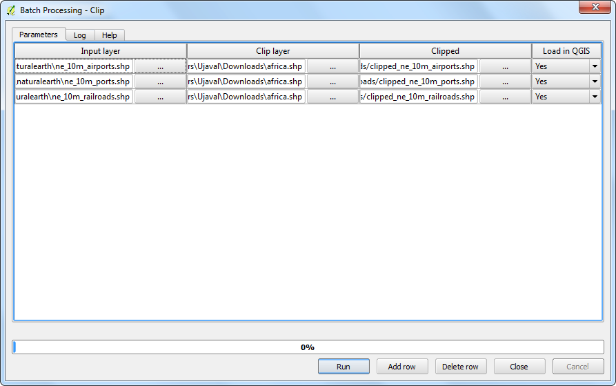

Μαζική επεξεργασία χρησιμοποιώντας το πλαίσιο επεξεργασίας
Το QGIS 2.0 εισήγαγε μια νέα έννοια που ονομάζεται Πλαίσιο επεξεργασίας.Προηγουμένως γνωστή ως Εξάντας, το Πλαίσιο Επεξεργασίας παρέχει ένα περιβάλλον μέσα στο QGIS που τρέχει τοπικούς αλγορίθμους και αλγορίθμους τρίτων για την επεξεργασία δεδομένων.Περιέχει μια καλή διεπαφή μαζικής επεξεργασίας που επιτρέπει σε κάποιον να εκτελέσει έναν αλγόριθμο σε πολλά επίπεδα εύκολα. Η μαζική επεξεργασία είναι ένα χρήσιμο εργαλείο που μπορεί να γλιτώσει κάποιον από χειρωνακτική προσπάθεια και να τον βοηθήσει να αυτοματοποιήσει επαναλαμβανόμενες εργασίες.
Επισκόπηση του έργου
Θα χρειαστούμε αρκετά παγκόσμια διανυσματικά επίπεδα και θα τα συνδέσουμε στην έκταση της Αφρικής με μια μόνο μαζική εντολή.
Άλλες δεξιότητες που θα μάθετε
Πάρτε τα δεδομένα
Natural Earth έχει αρκετά παγκόσμια διανυσματικά επίπεδα. Κάντε λήψη των ακόλουθων επιπέδων
Μόλις τα κατεβάσετε, αποσυμπιέστε και εξαγάγετε όλα τα shapefiles σε ένα φάκελο.
Πηγή δεδομένων : [NATURALEARTH]
Διαδικασία
Πηγαίνετε στο .

Αναζητήστε στο σχηματικό αρχείο Admin 0 Countries ne_10m_admin_0_countries.shp που έχετε κάνει λήψη και κάντε κλικ στο Open.

Εφόσον η εργασία μας είναι να περικόψουμε τα παγκόσμια επίπεδα στα σύνορα της Αφρικής, θα πρέπει αρχικά να προετοιμάσουμε ένα επίπεδο που θα περιέχει ένα πολύγωνο ολόκληρης της ηπείρου. Το επίπεδο των χωρών έχει ένα χαρακτηριστικό που ονομάζεται CONTINENT. Μπορούμε να χρησιμοποιήσουμε μια έννοια γεωεπεξεργασίας που ονομάζεται Dissolve για να συγχωνευτούν όλες οι χώρες που έχουν την ίδια τιμή ηπείρου και να γίνει η συγχώνευση σε ένα μόνο πολύγωνο.

Ανοίξτε το Dissolve tool from .

Επιλέξτε ne_10m_admin_0_countries ως το Input vector layer. Το Dissolve field θα είναι CONTINENT. Ονομάστε το εξαγόμενο αρχείο ως continents.shp και τσεκάρετε το κουτάκι δίπλα στο Add result to convas.
Note
Αν θέλετε να συγχωνεύσετε ALL όλα τα πολύγωνα ανεξάρτητα από τα χαρακτηριστικά τους, μπορείτε να επιλέξετε το – Dissolve All – ως Dissolve field. Αυτό θα συνδυάσει όλα τα πολύγωνα στο επίπεδο και θα σας δώσει ένα μόνο συνολικό πολύγωνο.

Η επεξεργασία διάλυσης μπορεί να πάρει λίγο χρόνο. Μόλις η διαδικασία ολοκληρωθεί, θα δείτε το νέο `` continent`` επίπεδο να έχει προστεθεί στο QGIS. Χρησιμοποιήστε το: guilabel: Select Single Feature από τη γραμμή εργαλείων και κάντε κλικ στην Αφρική για να επιλέξετε το πολύγωνο που αντιπροσωπεύει την ήπειρο.

Δεξί-κλικ στο continents επίπεδο και επιλέξτε Save Selection As....

Ονομάστε το εξαγόμενο αρχείο ως africa.shp. Εφόσον ενδιαφερόμαστε μόνο για το σχήμα της ηπείρου κι όχι για τα χαρακτηριστικά, μπορείτε να τσεκάρετε Skip attribute creation. Σιγουρευτείτε έχετε τσεκάρει το κουτάκι Add saved file to map και κάντε κλικ στο OK.

Τώρα θα έχετε φορτώσει το επίπεδο africa στο QGIS που περιέχει ένα μόνο πολύγωνο για ολόκληρη την ήπειρο. Τώρα, ήρθε η στιγμή να ξεκινήσουμε τη μαζική επεξεργασία περικοπής. Ανοίξτε το .

Αναζητήστε όλους τους διαθέσιμους αλγορίθμους και βρείτε το εργαλείο Clip από το . Μπορείτε επίσης να χρησιμοποιήσετε το κουτάκι Search για να βρείτε τους αλγόριθμους εύκολα.

Δεξί-κλικ στον αλγόριθμο Clip και επιλέξτε το Execure as batch process.

Στο παράθυρο διαλόγου Batch Processing , η πρώτη καρτέλα είναι η Parameters όπου ορίζουμε τις εισόδους. Κάντε κλικ στο ... δίπλα στην πρώτη σειρά της στήλης Input layer.

Περιηγηθείτε στον κατάλογο που περιέχει τα επίπεδα παγκόσμιας μεταφοράς που έχετε ήδη κάνει λήψη. Κρατήστε πατημένο το Shift και επιλέξτε όλα τα επίπεδα που θέλετε να κόψετε. Μπορείτε επίσης να χρησιμοποιήσετε το : kbd: Shift ή το : kBd:` Ctrl-Α` για να κάνετε πολλαπλή επιλογή. Κάντε κλικ στο: guilabel: Open.

Θα παρατηρήσετε ότι οι στήλες Input layer θα έχουν συμπληρωθεί αυτόματα με όλα τα στρώματα που έχετε επιλέξει. Μπορείτε να χρησιμοποιήσετε το κουμπί Add row για να προσθέσετε περισσότερες γραμμές και να ορίσετε περισσότερες εισόδους. Στη συνέχεια, θα πρέπει να επιλέξετε το επίπεδο που περιέχει το σύνορο για να κόψετε τα επίπεδα εισόδου μας. Κάντε κλικ στο κουμπί : guilabel: `` ... για την πρώτη γραμμή και προσθέστε το `` africa.shp``: guilabel: Clip layer. Δεδομένου ότι το επίπεδο περικοπής είναι το ίδιο για όλες τις εισόδους μας, μπορείτε να κάνετε διπλό-κλικ στην κεφαλίδα της στήλης: guilabel: Clip layer και το ίδιο επίπεδο θα συμπληρωθεί αυτόματα για όλες τις γραμμές Στη συνέχεια, πρέπει να καθορίσουμε τις εξόδους μας. Κάντε κλικ στο κουμπί ... δίπλα στην πρώτη γραμμή της στήλης Clipped`.

Αναζητήστε τον κατάλογο όπου θέλετε να βρίσκονται τα εξαγώμενα στρώματα. Δακτυλογραφήστε το όνομα του αρχείου ως``clipped_`` και κάντε κλικ στο κουμπί Αποθήκευση Save.

Θα δείτε ένα νέο αναδυόμενο παράθυρο διαλόγου : guilabel: Autofill settings. Επιλέξτε Fill with parameter values ως: guilabel:` Autofill mode`. Επιλέξτε: guilabel: Parameter to use ως Input layer. Αυτή η ρύθμιση θα προσθέσει το όνομα του αρχείου εισόδου στην έξοδο μαζί με το καθορισμένο `` output_`` όνομα αρχείου. Αυτό είναι σημαντικό για να εξασφαλιστεί ότι όλα τα αρχεία εξόδου θα έχουν μοναδικά ονόματα και δεν αντικαθιστούν το ένα το άλλο.

Τώρα είμαστε έτοιμοι να ξεκινήσουμε τη μαζική επεξεργασία. Κάντε κλικ στο Run.

Ο αλγόριθμος περικοπής θα τρέξει για κάθε μία από τις εισόδους και θα δημιουργήσει αρχεία εξόδου που είναι αυτά που έχουμε καθορίσει. Μόλις ολοκληρωθεί η διαδικασία παρτίδας, θα δείτε τα επίπεδα να έχουν προστεθεί στον καμβά. του QGIS Όπως θα παρατηρήσετε, όλα τα παγκόσμια επίπεδα είναι σωστά κομμένα στο σύνορο της ηπείρου που είχαμε καθορίσει.